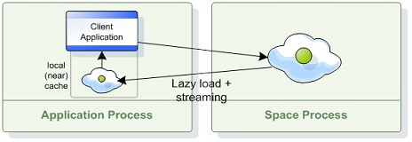

Local Cache is a wrapper class for a space proxy, which increases performance in read-mostly scenarios for read operations that are matched by the SpaceID field or property. The cache stores Entries that are retrieved from the space proxy, and the subsequent retrieval of these Entries is done from the cache without using the proxy. The cache is highly concurrent, and will boosts performance significantly for read-mostly scenarios.

The ILocalCache interface implements the ISpaceProxy, and working with it is exactly the same as working with the ISpaceProxy API. Here's a simple example of creating a local cache and using it:
The data object, in this case a session object:
public class Session
{
[..]
[SpaceID]
public Guid SeesionId
{
get{ return _sessionId; }
set{ _sessionId= value; }
}
[SpaceVersion]
public int Version
{
get{ return _version; }
set{ _version = value; }
}
}
Important properties:
[SpaceID] property, objects without [SpaceID] will not be stored in the local cache.\[SpaceVersion\] property, otherwise Entries stored in the local cache might be of older version than the ones in the space, if they were updated not through the local cache.Creating and using a local cache:
ISpaceProxy spaceProxy = // create or obtain a reference to a space proxy
ILocalCache localCache = GigaSpacesFactory.CreateIdBasedLocalCache(spaceProxy);
Session template = new Session();
template.SessionId = // session guid
Guid id = // session guid
//Read the Entry from the cache, if a session with this ID is present in the cache it will be retrieved.
//Otherwise, the Entry will be read from the proxy and loaded into the local cache if it exists.
Session session = localCache.ReadById<Session>(id);
...
//The Entry is present in the cache and will be read from it.
Session otherSession = localCache.ReadById<Session>(id);
//ReadByIds
object[] ids = new object[] { ... } // initialize an ids array
object routing = ... ; // set a routing value
IReadByIdsResult<Session> result = localCache.ReadByIds<Session>(ids, routing);
The local cache also recognizes templates which are considered ID-based (A template that is matched against the SpaceID property only), and it optimizes the performance for such templates in the same fashion as the ReadById operation does.
The following code is equivalent to the above but it uses templates:
...
Session template = new Session();
template.SessionId = // session guid
//Read the Entry from the cache, if a session with this ID is present in the cache it will be retrieved.
//Otherwise, the Entry will be read from the proxy and loaded into the local cache if it exists.
Session session = localCache.Read(template);
...
//The Entry is present in the cache and will be read from it.
Session otherSession = localCache.Read(template);
If the supplied template is not ID-based, for instance an SqlQuery, then the Entry will be read from the underlying space proxy without first going through the local cache.
Since the cache needs to investigate the template to decide whether it is considered ID-based template, this imposes some performance impact on the query instead of using the ReadById method.
The Entries stored in the local cache might need to be evicted at some point, due to size limitations, time limitations, etc. This behavior is determined by the eviction strategy the cache has been configured to work with.
Refer to Cache Eviction Strategy for more information.
Once an Entry is loaded into the cache, it is kept synchronized with the remote space by registering for notifications for changes that affect Entries stored in the cache. The state of the internal local cache is updated according to these notifications. This synchronization is done asynchronously, behind the scenes.
SynchronizeWithRemoteSpace configuration property to false.[SpaceVersion] property, otherwise Entries stored in the local cache may be of an older version than the ones in the space, if they were updated not through the local cache.The local cache can be configured before it is initialized, by supplying the constructor with a custom IdBasedLocalCacheConfig object. The most common configuration option is the eviction strategy.
ISpaceProxy spaceProxy = // create or obtain a reference to a space proxy
IdBasedLocalCacheConfig cacheConfig = new IdBasedLocalCacheConfig();
// ... adjusting the config
ILocalCache localCache = GigaSpacesFactory.CreateIdBasedLocalCache(spaceProxy, cacheConfig);
By default, the local cache stores all object types. However, in some scenarios it may be required to store only specific types in the local cache, while working with the other types by proxy only. It is possible to specify explicitly which types will be cached, by putting the desired types in the IdBasedLocalCacheConfig.CachedTypes list property. For example:
IdBasedLocalCacheConfig cacheConfig = new IdBasedLocalCacheConfig();
List<Type> cachedTypes = new List<Type>();
//Classes of type Session will be locally cached
cachedTypes.Add(typeof(Session));
//Classes of type MyClass will be locally cached
cachedTypes.Add(typeof(MyClass));
cacheConfig.CachedTypes = cachedTypes;
ILocalCache localCache = GigaSpacesFactory.CreateIdBasedLocalCache(spaceProxy, cacheConfig);
Cached types support inheritance, so there's no need to explicitly add all the types if they derive from one another. Using the Object type will cache everything.
The local cache has cache specific managing capabilities which are exposed by the LocalCacheManager property of the cache.
When using the manager different operations can be done, such as clearing the cache only, querying the local cache only without
going through the proxy in case of cache miss, evicting entries and more.
Here's an example of how to obtain and interact with the cache manager:
ILocalCache localCache = // obtain a cache
//Clear the cache if there are more than 10,000 caches entries
if (localCache.LocalCacheManager.CachedEntriesCount > 10000)
localCache.LocalCacheManager.ClearLocalCache();